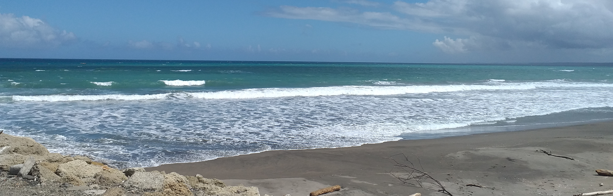

Whanganui
"The River City"

Waves rolling onto the black-sand of Whanganui beach, north of the Whanganui river mouth"
Information about Whanganui
- Whanganui is a city on the west coast of New Zealand's North Island (Te Ika-a-Maui)
- The English translation of Whanganui is "big bay" or "big harbour"
- Whanganui is situated at the river mouth of the Whanganui River; New Zealand's longest navigable waterway
- The population of Whanganui in June 2018 was 40,900
- Whanganui is home to the Whanganui Chronicle; New Zealand's oldest newspaper
- The Cemetery Circuit is an annual motorcycle race held on the streets of downtown Whanganui, passing through the old cemetery and the industrial area